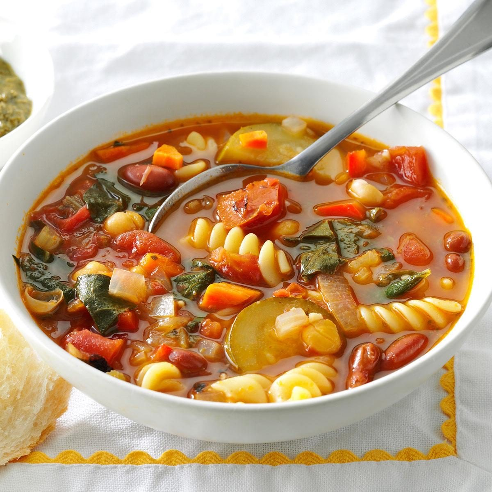

Odkaz
Suroviny
| 4 struziky |
cesnak |
| 6 ks |
mrkva |
| 1 ks |
zeler |
|
olivovy olej |
| 200 ml |
vino cervene |
| 2 ks |
cuketa |
| 1/2 ks |
kel |
| 800 g / cele |
paradajky lupane |
| 400 g |
biela fazula |
| 1ks |
por |
| 6ks |
zemiaky |
|
parmezan |
|
sol |
|
bazalka |
Postup
-
Očistíme si a nakrájame všetku zeleninu. Ako prvé opražíme na olivovom
oleji cibuľu, cesnak, mrkvu, zeler a pór asi takých 10 minút. Po
opražení pridáme nakrájanú cuketu a kel a následne zalejeme vodou a
pridáme víno.
-
Chvíľku povaríme a pridáme nakrájané zemiaky. Varíme až kým nie je
zelenina mäkká. Potom pridávame paradajky, celé to poriadne premiešame,
podľa chuti osolíme. Úplne na koniec pridáme fazuľu. Dochutíme bazalkou,
najlepšie čerstvou, ja som mal momentálne doma iba sušenú.
-
Husté minestrone, z ktorého sa určite dobre najete je na svete :) Podľa
hustoty a vašej chuti môžete pridať do polievky aj cestoviny rôzneho
druhu. Pred podávaním posypeme parmezánom.